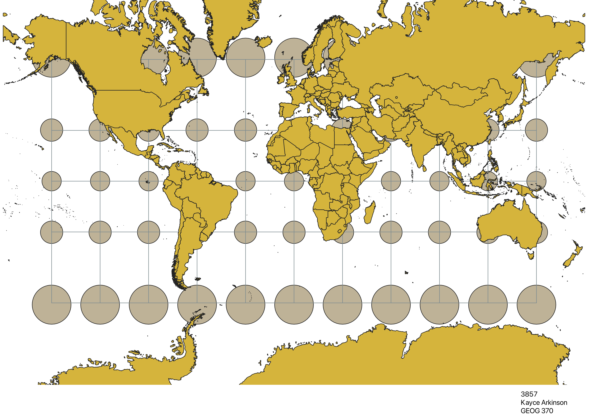
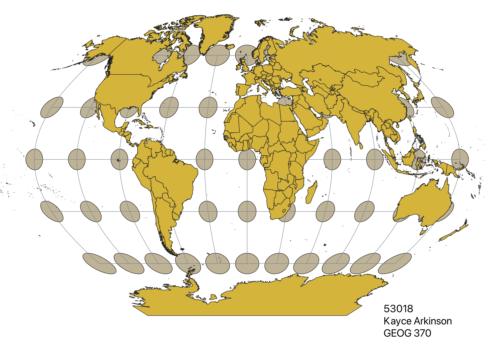
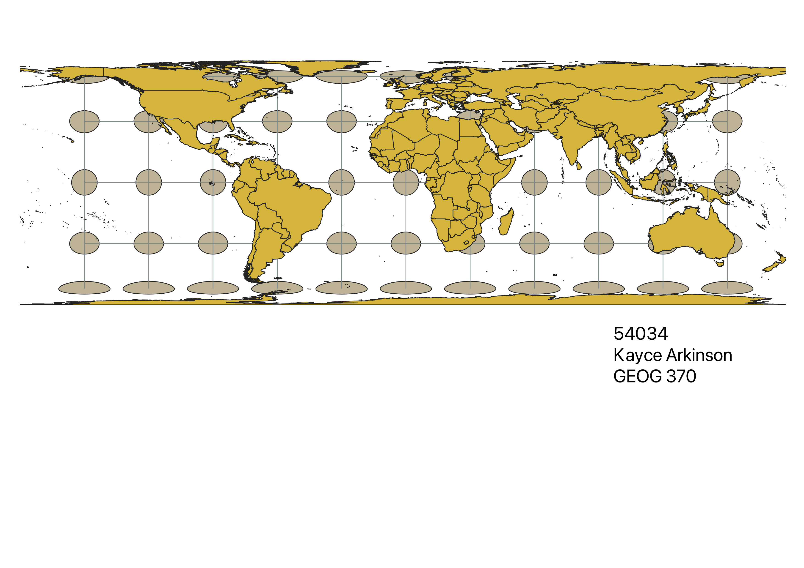
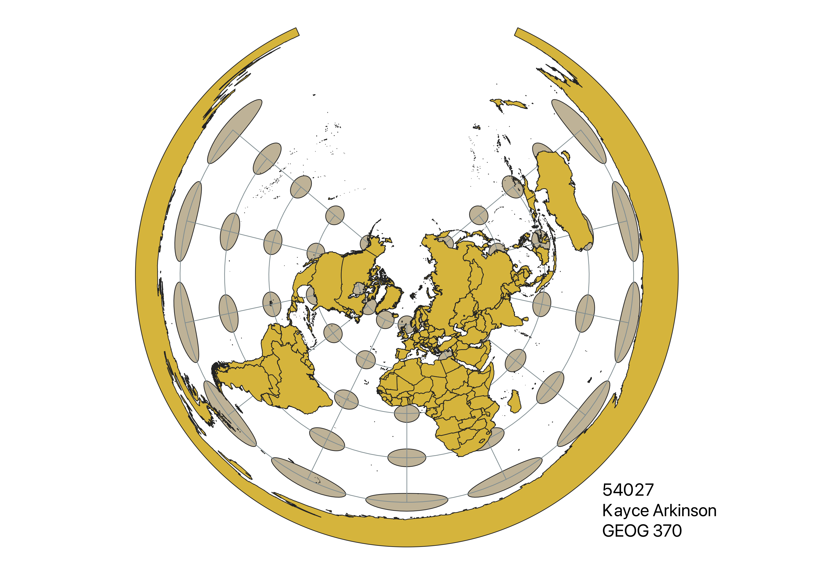
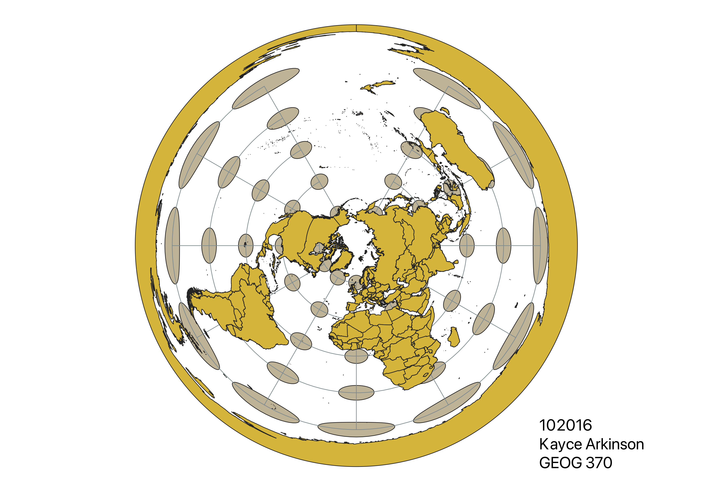
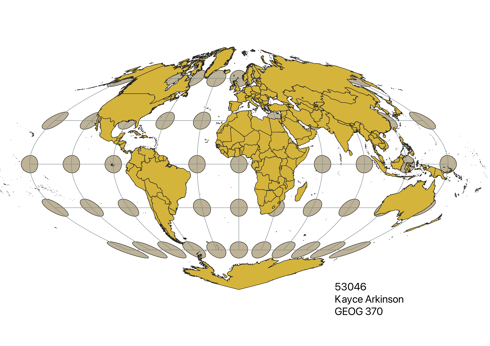
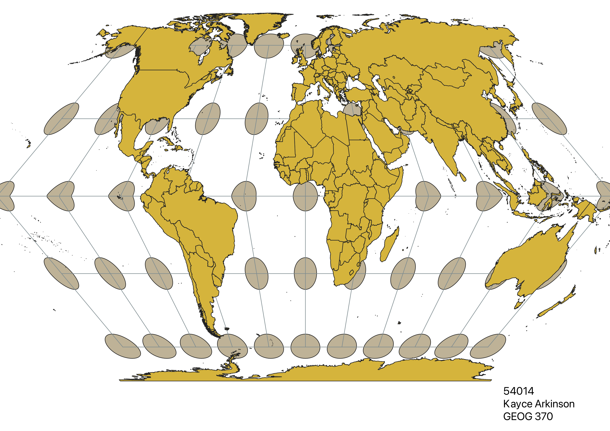

Homework 3
In QGIS I clicked on the CRS value on the bottom toolbar of the screen, which took me to a page titled 'Project Properties - CRS'. From there, I used the search bar to find the required projections listed in the assignment details by Dr. Arce-Nazario.
WGS84 Projection
Neither shape nor area are preserved, but the distance remains equal between indicatricies. This distortion worsens moving either N. or S. from the equator.

Aitoff Projection
Shape, area, and distance travelling both longitudinally and lattitudinally are distorted in this projection. The least affected region of the map is the intersection of the equator and prime meridian.

Pseudo Mercator (3857) Projection
In this projection the shape is preserved, but the area and distance becomes distorted between parallels.

Winkel (53018) Projection
In the Winkel Projection, the indicatricies directly neighboring and residing on both the equator and the prime meridian appear to be less distorted than others. The farther east and west one looks, the more stretched each circle becomes, excluding those along the equator. As one travels north or south, the circles also elongate and the distance between points increases.

Equal Area (54034) Projection
In this projection, the distance between indicatricies remains equal, however the shape distorts as one travels N. or S. away from the equator. The distortion of shape and area is constant along each parallel but varies by meridian.

54027 Projection
This looks like a useful projection for the North Pole, because the distortion in area and shape only impacts the southern-most latitudes. Across all northings and eastings, the distance between indicatricies is very distorted.

Azimuthal (102016) Projection
This would be another useful projection for the northern latitudes, as there is also increasing distortion to shape and area the farther south one travels. The distance between each circle, however, appears to remain constant across the projection.

Craster Parabolic (53046) Projection
I chose this projection because I like the name of it. While the distortion on this projection is stronger along the outermost longitudes and latitudes, I appreciate the way it looks like a middle stage in changing the projection of a map from flat to elliptical/spherical.

Eckert II (54014) Projection
In my novice opinion, this map projection looks very similar to the Craster Parabolic projection. However on this map, the only undistorted point lies at coordinate point (0,0).

Data used for this project
Download Natrual Earth 1:10m Cultural Vector